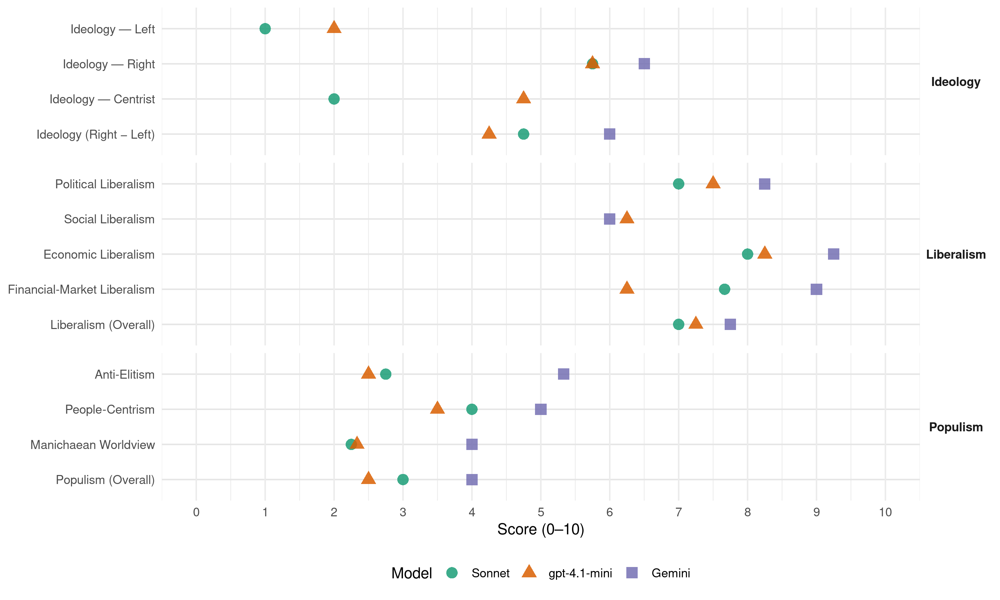

FrP (Norway, 1997)
manifesto_id 12951_199709
Get full text: This site shows derived annotations and short verbatim quotes only. The full manifesto text is © Manifesto Project / WZB — obtain it via manifesto-project.wzb.eu using the manifesto_id above.
Headline scores
| Dimension | Sonnet | gpt-4.1-mini | Gemini |
|---|---|---|---|
| Populism (Overall) | 3.0 | 2.5 | 4.0 |
| Anti-Elitism | 2.8 | 2.5 | 5.3 |
| People-Centrism | 4.0 | 3.5 | 5.0 |
| Manichaean Worldview | 2.2 | 2.3 | 4.0 |
| Ideology (Right − Left) | 4.8 | 4.2 | 6.0 |
| Liberalism (Overall) | 7.0 | 7.2 | 7.8 |
| Political Liberalism | 7.0 | 7.5 | 8.2 |
| Social Liberalism | – | 6.2 | 6.0 |
| Economic Liberalism | 8.0 | 8.2 | 9.2 |
| Financial-Market Liberalism | 7.7 | 6.2 | 9.0 |
Evidence per dimension
Economic Liberalism
Gemini · score 10.0 · verified · chunk 1
“fri markedsøkonomien er en vesentlig betingelse”
RETTSSTATEN RETTEN TIL Å VELGE Den frie markedsøkonomien er en vesentlig betingelse for den enkeltes valgfrihet. Kun
Gemini · score 10.0 · verified · chunk 2
“deregulering og skatte og avgiftslettelser”
nye arbeidsplasser i distriktene ved deregulering og skatte og avgiftslettelser.
Gemini · score 9.0 · verified · chunk 3
“fri konkurranse innen transportnæringen”
TIDSMESSIG SAMFERDSEL, KOMMUNIKASJON OG TRANSPORT Fremskrittspartiet ønsker fri konkurranse innen transportnæringen. I praksis vil dette si at den enkelte
Gemini · score 8.0 · verified · chunk 4
“åpenhet, frihet, frihandel og en fri menneskelig utfoldelse”
Fremskrittspartiet innser at det er langt frem før vi får et verdenssamfunn preget av åpenhet, frihet, frihandel og en fri menneskelig utfoldelse, noe som blant annet skyldes store kulturelle barrierer
gpt-4.1-mini · score 9.0 · verified · chunk 1
“Fremskrittspartiet vil arbeide for sterkt nedsettelse av skatter, avgifter og offentlige inngrep”
Fremskrittspartiet er et liberalistisk parti. Det bygger på Norges Grunnlov, norsk og vestlig tradisjon og kulturarv med basis i det kristne livssyn. Fremskrittspartiets hovedmål er å arbeide for sterkt nedsettelse av skatter, avgifter og offentlige inngrep.
gpt-4.1-mini · score 9.0 · verified · chunk 2
“Fjerne subsidier til reindrift”
FREMSKRITTSPARTIET VIL: 1 Fjerne subsidier til reindrift. 2 Arbeide for en fornuftig ressursforvaltning av offentlige beitemarker. 3 Redusere byråkratiet overfor reindriftsnæringen.
gpt-4.1-mini · score 8.0 · verified · chunk 3
“Fremskrittspartiet ønsker fri konkurranse innen transportnæringen”
Fremskrittspartiet ønsker fri konkurranse innen transportnæringen. I praksis vil dette si at den enkelte transportgren kun skal belastes med de utgifter den påfører samferdselen. Dersom en transportform påfører omgivelsene utgifter eller ulemper, bør miljøavgifter kunne tas i bruk.
gpt-4.1-mini · score 7.0 · verified · chunk 4
“reduksjon eller avskaffelse av hindringer for menneskets utfoldelse”
Fremskrittspartiet har enkeltmenneskets frihet og selvråderett som en vesentlig målsetting. Virkemidler i arbeidet for å nå dette målet er reduksjon eller avskaffelse av hindringer for menneskets utfoldelse, virketrang og realisering av egne mål. Slike hindringer kan være en følge av at statens makt er for omfattende.
Sonnet · score 9.0 · verified · chunk 1
“markedsøkonomi er en nødvendig forutsetning”
årsaken er at markedsøkonomi er en nødvendig forutsetning både for den demokratiske rettsstat og den økonomiske velstand.
Sonnet · score 8.0 · verified · chunk 2
“fri konkurranse mellom energikilder”
Det skal være fri konkurranse mellom energikilder. Prismekanismen vil da stimulere til forskning
Sonnet · score 8.0 · verified · chunk 3
“fri konkurranse innen transportnæringen”
Fremskrittspartiet ønsker fri konkurranse innen transportnæringen. I praksis vil dette si at den enkelte transportgren kun skal belastes med de utgifter den påfører samferdselen.
Sonnet · score 7.0 · verified · chunk 4
“frihandel, felles konkurranseregler og menneskelig frihet”
politiske områder som i sterk grad relaterer seg til frihandel, felles konkurranseregler og menneskelig frihet.
Financial-Market Liberalism
Gemini · score 10.0 · verified · chunk 1
“Kapitalmarkedet må være fritt med reelle”
KAPITALMARKEDET Kapitalmarkedet må være fritt med reelle priser, slik at kapitalen går dit hvor
Gemini · score 8.0 · verified · chunk 3
“private pensjonsforsikringer, hvor innbetalingene står i forhold”
alle som tjener mer enn taket betaler et likt kronebeløp i pensjonspremie. De som tjener mindre enn taket, betaler en lavere premie i form av en flat prosentsats av den inntekten de har. Et tak på innbetal-ingene vil bedre mulighetene for å tegne private pensjonsforsikringer, hvor innbetalingene står i forhold til utbetalingene. Rammevilkårene
gpt-4.1-mini · score 9.0 · verified · chunk 1
“Fremskrittspartiet vil privatisere statsbankene for å fremme konkurranse og sikre alle brukere likeverdige tilbud og behandling”
Kapitalmarkedet må være fritt med reelle priser, slik at kapitalen går dit hvor den gjør størst nytte for seg. Private finansieringsinstitusjoner skal sikre næringslivet og borgerne nødvendig kapital. Fremskrittspartiet vil privatisere statsbankene for å fremme konkurranse og sikre alle brukere likeverdige tilbud og behandling.
gpt-4.1-mini · score 7.0 · verified · chunk 2
“Fjerne alle konsesjonsordninger for fangst”
FREMSKRITTSPARTIET VIL: 4 Fjerne alle konsesjonsordninger for fangst. 5 Ha en trålfri sone langs kysten. 6 Oppheve Råfiskloven. 7 Fjerne alle konsesjonsordninger vedrørende oppkjøp, omsetning, eksport og foredling av fisk.
gpt-4.1-mini · score 6.0 · verified · chunk 3
“Renter på lån i Lånekassen settes lik renten i det langsiktige kredittmarked”
Renter på lån i Lånekassen settes lik renten i det langsiktige kredittmarked. Fremskrittspartiet vil at lån i Lånekassen gis samme rente som lån i det langsiktige kredittmarked.
gpt-4.1-mini · score 3.0 · verified · chunk 4
“store kulturelle barrierer på kloden”
Men de kan også skyldes nasjonale grenser av proteksjonistisk karakter som utelukker mennesker og bedrifter fra å samarbeide over landegrensene. Fremskrittspartiet innser at det er langt frem før vi får et verdenssamfunn preget av åpenhet, frihet, frihandel og en fri menneskelig utfoldelse, noe som blant annet skyldes store kulturelle barrierer på kloden.
Sonnet · score 9.0 · verified · chunk 1
“Kapitalmarkedet må være fritt med reelle priser”
Kapitalmarkedet må være fritt med reelle priser, slik at kapitalen går dit hvor den gjør størst nytte for seg.
Sonnet · score 7.0 · verified · chunk 2
“omsettelige kvoter”
Den beste måten å sikre dette på er etter Fremskrittspartiets mening gjennom omsettelige kvoter.
Sonnet · score 7.0 · verified · chunk 3
“private pensjonsordninger være fullt fradragsberettiget”
La innbetalinger til private pensjonsordninger være fullt fradragsberettiget, og la utbetalingene komme til beskatning på vanlig måte.
Political Liberalism
Gemini · score 9.0 · verified · chunk 1
“sikre enkeltmenneskets rettssikkerhet. Domstolene må”
Fremskrittspartiet legger vekt på å sikre enkeltmenneskets rettssikkerhet. Domstolene må være uavhengige institusjoner, som skal
Gemini · score 8.0 · verified · chunk 2
“domstolene utnevnes av et kollegium”
At øvrige domstoler utnevnes av et kollegium oppnevnt og administrert av Høyesterett.
Gemini · score 8.0 · verified · chunk 3
“sikre at ytrings- og pressefriheten gjelder”
utbygging av stamnettene på informasjonsmotorveien gjennom fri konkurranse. 2 Sikre at ytrings- og pressefriheten gjelder fullt ut også for informasjonsmotorveien. 3 Sikre
Gemini · score 8.0 · verified · chunk 4
“demokrati, ytringsfrihet, eiendomsrett, organisasjonsfrihet, likhet for loven”
Slike kan være grunnleggende regler som demokrati, ytringsfrihet, eiendomsrett, organisasjonsfrihet, likhet for loven, samt oppførselsregler i skoler
gpt-4.1-mini · score 9.0 · verified · chunk 1
“Domstolene må være uavhengige institusjoner, som skal settes i stand til å sikre rask og rettferdig behandling”
Fremskrittspartiet legger vekt på å sikre enkeltmenneskets rettssikkerhet. Domstolene må være uavhengige institusjoner, som skal settes i stand til å sikre rask og rettferdig behandling.
gpt-4.1-mini · score 8.0 · verified · chunk 2
“Domstolene må være uavhengige institusjoner som er i stand til å sikre rask og rettferdig behandling”
Personvern Fremskrittspartiet legger vekt på å sikre enkeltmenneskets rettssikkerhet. Domstolene må være uavhengige institusjoner som er i stand til å sikre rask og rettferdig behandling. Alle mennesker har rett til trygghet mot at statlige organer skal kontrollere privatlivet.
gpt-4.1-mini · score 7.0 · verified · chunk 3
“En fri og uavhengig presse er en forutsetning for demokrati og ytringsfrihet”
En fri og uavhengig presse er en forutsetning for demokrati og ytringsfrihet. En avis er ikke uavhengig dersom den er avhengig av støtte fra staten. Etterhvert som avisene blir mer og mer avhengig av statsstøtte, vil uavhengig journalistikk vike plassen for næringspolitiske forsøk på å sikre mer støtte.
gpt-4.1-mini · score 6.0 · verified · chunk 4
“demokrati, ytringsfrihet, eiendomsrett, organisasjonsfrihet, likhet for loven”
Fremskrittspartiet går inn for en integreringspolitikk med vekt på at de regler, normer og verdier som skal være felles for hele befolkningen må gå foran hensynet til enkeltgrupper. Slike kan være grunnleggende regler som demokrati, ytringsfrihet, eiendomsrett, organisasjonsfrihet, likhet for loven, samt oppførselsregler i skoler, offentlige institusjoner, arbeidsplasser, idrettsforeninger, borettslag, nærmiljøer, osv.
Sonnet · score 8.0 · verified · chunk 1
“Domstolene skal sikre at loven ikke anvendes i strid med Grunnloven”
Domstolene skal sikre at loven ikke anvendes i strid med Grunnloven, og at Regjeringen og offentlig forvaltning ikke gir pålegg uten hjemmel i lov.
Sonnet · score 7.0 · verified · chunk 2
“Domstolene må være uavhengige institusjoner”
Fremskrittspartiet legger vekt på å sikre enkeltmenneskets rettssikkerhet. Domstolene må være uavhengige institusjoner som er i stand til å sikre rask og rettferdig behandling.
Sonnet · score 7.0 · verified · chunk 3
“ytringsfrihet, eiendomsrett, organisasjonsfrihet, likhet for loven”
grunnleggende regler som demokrati, ytringsfrihet, eiendomsrett, organisasjonsfrihet, likhet for loven, samt oppførselsregler i skoler, offentlige institusjoner
Sonnet · score 6.0 · verified · chunk 4
“demokrati, ytringsfrihet, eiendomsrett, organisasjonsfrihet”
grunnleggende regler som demokrati, ytringsfrihet, eiendomsrett, organisasjonsfrihet, likhet for loven
Liberalism (Overall)
Gemini · score 9.0 · verified · chunk 1
“fri markedsøkonomien er en vesentlig betingelse”
RETTSSTATEN RETTEN TIL Å VELGE Den frie markedsøkonomien er en vesentlig betingelse for den enkeltes valgfrihet. Kun
Gemini · score 8.0 · verified · chunk 2
“deregulering og skatte og avgiftslettelser”
nye arbeidsplasser i distriktene ved deregulering og skatte og avgiftslettelser.
Gemini · score 7.0 · verified · chunk 3
“fri konkurranse innen transportnæringen”
TIDSMESSIG SAMFERDSEL, KOMMUNIKASJON OG TRANSPORT Fremskrittspartiet ønsker fri konkurranse innen transportnæringen. I praksis vil dette si at den enkelte
Gemini · score 7.0 · verified · chunk 4
“åpenhet, frihet, frihandel og en fri menneskelig utfoldelse”
Fremskrittspartiet innser at det er langt frem før vi får et verdenssamfunn preget av åpenhet, frihet, frihandel og en fri menneskelig utfoldelse, noe som blant annet skyldes store kulturelle barrierer
gpt-4.1-mini · score 9.0 · verified · chunk 1
“Fremskrittspartiet vil arbeide for sterkt nedsettelse av skatter, avgifter og offentlige inngrep”
Fremskrittspartiet er et liberalistisk parti. Det bygger på Norges Grunnlov, norsk og vestlig tradisjon og kulturarv med basis i det kristne livssyn. Fremskrittspartiets hovedmål er å arbeide for sterkt nedsettelse av skatter, avgifter og offentlige inngrep.
gpt-4.1-mini · score 8.0 · verified · chunk 2
“Fjerne subsidier til reindrift”
FREMSKRITTSPARTIET VIL: 1 Fjerne subsidier til reindrift. 2 Arbeide for en fornuftig ressursforvaltning av offentlige beitemarker. 3 Redusere byråkratiet overfor reindriftsnæringen.
gpt-4.1-mini · score 7.0 · verified · chunk 3
“En fri og uavhengig presse er en forutsetning for demokrati og ytringsfrihet”
En fri og uavhengig presse er en forutsetning for demokrati og ytringsfrihet. En avis er ikke uavhengig dersom den er avhengig av støtte fra staten. Etterhvert som avisene blir mer og mer avhengig av statsstøtte, vil uavhengig journalistikk vike plassen for næringspolitiske forsøk på å sikre mer støtte.
gpt-4.1-mini · score 5.0 · verified · chunk 4
“demokrati, ytringsfrihet, eiendomsrett, organisasjonsfrihet, likhet for loven”
Fremskrittspartiet går inn for en integreringspolitikk med vekt på at de regler, normer og verdier som skal være felles for hele befolkningen må gå foran hensynet til enkeltgrupper. Slike kan være grunnleggende regler som demokrati, ytringsfrihet, eiendomsrett, organisasjonsfrihet, likhet for loven, samt oppførselsregler i skoler, offentlige institusjoner, arbeidsplasser, idrettsforeninger, borettslag, nærmiljøer, osv.
Sonnet · score 8.0 · verified · chunk 1
“Fremskrittspartiet er et liberalistisk parti”
IDEOLOGISK GRUNNLAG Fremskrittspartiet er et liberalistisk parti. Det bygger på Norges Grunnlov, norsk og vestlig tradisjon og kulturarv.
Sonnet · score 7.0 · verified · chunk 2
“fri konkurranse mellom energikilder”
Det skal være fri konkurranse mellom energikilder. Prismekanismen vil da stimulere til forskning
Sonnet · score 7.0 · verified · chunk 3
“fri konkurranse innen transportnæringen”
Fremskrittspartiet ønsker fri konkurranse innen transportnæringen. I praksis vil dette si at den enkelte transportgren kun skal belastes med de utgifter den påfører samferdselen.
Sonnet · score 6.0 · verified · chunk 4
“frihandel, felles konkurranseregler og menneskelig frihet”
politiske områder som i sterk grad relaterer seg til frihandel, felles konkurranseregler og menneskelig frihet.
Anti-Elitism
Gemini · score 6.0 · verified · chunk 1
“politikerne kan «trykke» flere pengesedler”
for å motvirke et system hvor politikerne kan «trykke» flere pengesedler for på kort sikt å kjøpe seg
Gemini · score 4.0 · verified · chunk 2
“utpekt av politikere og byråkrater”
spesielle næringer som blir utpekt av politikere og byråkrater.
Gemini · score 6.0 · verified · chunk 3
“politikere, byråkrater og organisasjoner har for stor makt”
enhetsskolen preget av sterk politisk styring, kunstig utjevning mellom elevene, og derved mangel på mulighet for individuell utfoldelse og utvikling. Fremskrittspartiet mener at politikere, byråkrater og organisasjoner har for stor makt over undervisningen, og vil
gpt-4.1-mini · score 3.0 · verified · chunk 1
“Fremskrittspartiet ser maktkonsentrasjon hos det offentlige som den største trussel mot den enkeltes frihet”
Fremskrittspartiet ser maktkonsentrasjon hos det offentlige som den største trussel mot den enkeltes frihet. Fremskrittspartiet går derfor inn for at staten og andre offentlige organer bare skal ta seg av oppgaver som enkeltmennesker, organisasjoner og bedrifter ikke kan løse selv.
gpt-4.1-mini · score 2.0 · verified · chunk 2
“omfattende tariffavtaler i den private sektor og stive lønnsregulativer i den offentlige sektor”
En naturlig markedstilpasset bosetting hindres i dag av omfattende tariffavtaler i den private sektor og stive lønnsregulativer i den offentlige sektor. Den beste form for distriktspolitikk er at bedriftene får beholde sin egen verdiskaping.
gpt-4.1-mini · score 2.0 · verified · chunk 3
“Politikere, byråkrater og organisasjoner har for stor makt”
Norsk skolevesen tar i sin organisering lite hensyn til den enkeltes muligheter og behov. Tvert imot er enhetsskolen preget av sterk politisk styring, kunstig utjevning mellom elevene, og derved mangel på mulighet for individuell utfoldelse og utvikling. Fremskrittspartiet mener at politikere, byråkrater og organisasjoner har for stor makt over undervisningen, og vil derfor aktivisere foreldre, lærere og elever.
gpt-4.1-mini · score 3.0 · verified · chunk 4
“Det er ikke umoralsk å mene at man bør ta hensyn til reaksjoner mot denne innvandring”
Innvandring av asylsøkere Det er grunn til å frykte at en fortsatt innvandring av asylsøkere bare tilnærmet det omfang som man har hatt i de senere år, vil føre til alvorlige motsetninger mellom folkegrupper i Norge. Det er ikke umoralsk å mene at man bør ta hensyn til reaksjoner mot denne innvandring for å forebygge konflikter. Det er heller ikke umoralsk å mene at man bør forebygge for raske forandringer av det helhetspreg som vår befolkning har.
Sonnet · score 3.0 · verified · chunk 1
“byråkratiet for stor makt over det enkelte menneske”
Dette gir byråkratiet for stor makt over det enkelte menneske, og gjør det vanskelig for den enkelte å forutberegne sin rettslige situasjon.
Sonnet · score 3.0 · verified · chunk 2
“politikere og byråkrater”
støtte til enkeltbedrifter og spesielle næringer som blir utpekt av politikere og byråkrater
Sonnet · score 3.0 · verified · chunk 3
“politikere, byråkrater og organisasjoner har for stor makt”
Fremskrittspartiet mener at politikere, byråkrater og organisasjoner har for stor makt over undervisningen, og vil derfor aktivisere foreldre, lærere og elever.
Sonnet · score 2.0 · verified · chunk 4
“statens makt er for omfattende”
Slike hindringer kan være en følge av at statens makt er for omfattende. Men de kan også skyldes nasjonale grenser
Ideology — Centrist
gpt-4.1-mini · score 6.0 · verified · chunk 1
“Fremskrittspartiet bygger sin politikk på Grunnlovens prinsipper om enkeltmenneskets rettigheter og plikter”
Rettsstatstanken skal bygge på sikring av individet og dets rettigheter. Fremskrittspartiet bygger sin politikk på Grunnlovens prinsipper om enkeltmenneskets rettigheter og plikter.
gpt-4.1-mini · score 4.0 · verified · chunk 2
“hver borger skal ha rett til å slå seg ned hvor som helst i landet”
Fremskrittspartiet ser det ikke som et mål i seg selv å fastfryse et bosettingsmønster uten hensyn til endringer i næringsgrunnlaget. Fremskrittspartiet går inn for at enhver borger skal ha rett til å slå seg ned hvor som helst i landet som arbeidstaker eller næringsdrivende.
gpt-4.1-mini · score 4.0 · verified · chunk 3
“Politikere, byråkrater og organisasjoner har for stor makt over undervisningen”
Fremskrittspartiet mener at politikere, byråkrater og organisasjoner har for stor makt over undervisningen, og vil derfor aktivisere foreldre, lærere og elever.
gpt-4.1-mini · score 5.0 · verified · chunk 4
“Det er ikke umoralsk å mene at man bør ta hensyn til reaksjoner mot denne innvandring”
Innvandring av asylsøkere Det er grunn til å frykte at en fortsatt innvandring av asylsøkere bare tilnærmet det omfang som man har hatt i de senere år, vil føre til alvorlige motsetninger mellom folkegrupper i Norge. Det er ikke umoralsk å mene at man bør ta hensyn til reaksjoner mot denne innvandring for å forebygge konflikter.
Sonnet · score 2.0 · verified · chunk 1
“enkeltmenneskets rettigheter og plikter”
Fremskrittspartiet bygger sin politikk på Grunnlovens prinsipper om enkeltmenneskets rettigheter og plikter.
Sonnet · score 2.0 · verified · chunk 2
“enhver borger skal ha rett”
Fremskrittspartiet går inn for at enhver borger skal ha rett til å slå seg ned
Sonnet · score 2.0 · verified · chunk 3
“hvert enkelt menneske selv har hovedansvaret”
Fremskrittspartiet vil understreke at hvert enkelt menneske selv har hovedansvaret for å sørge for seg og sine nærmeste.
Sonnet · score 2.0 · verified · chunk 4
“enkeltmenneskets frihet og selvråderett”
Fremskrittspartiet har enkeltmenneskets frihet og selvråderett som en vesentlig målsetting.
Ideology — Left
gpt-4.1-mini · score 2.0 · verified · chunk 1
“Fremskrittspartiet tar sterk avstand fra forskjellsbehandling av mennesker basert på rase, religion og etnisk opprinnelse”
Fremskrittspartiet tar sterk avstand fra forskjellsbehandling av mennesker basert på rase, religion og etnisk opprinnelse. Fremskrittspartiet vil verne om de rettigheter som Grunnloven la opp til, slik som eiendomsrett, næringsfrihet, den personlige frihet og ytringsfrihet.
gpt-4.1-mini · score 2.0 · verified · chunk 2
“Fjerne subsidier til reindrift”
FREMSKRITTSPARTIET VIL: 1 Fjerne subsidier til reindrift. 2 Arbeide for en fornuftig ressursforvaltning av offentlige beitemarker. 3 Redusere byråkratiet overfor reindriftsnæringen.
gpt-4.1-mini · score 2.0 · verified · chunk 3
“Sosialpolitikken må utformes slik at den kommer de menneskene til gode som har størst behov for hjelp”
For Fremskrittspartiet er det et mål å hjelpe de menneskene i samfunnet som virkelig lider sosial nød. Sosialpolitikken må utformes slik at den kommer de menneskene til gode som har størst behov for hjelp. Fremskrittspartiet vil understreke at hvert enkelt menneske selv har hovedansvaret for å sørge for seg og sine nærmeste.
gpt-4.1-mini · score 2.0 · verified · chunk 4
“Fremskrittspartiet vil at Norge skal fortsette å føre en restriktiv politikk”
Fremskrittspartiet vil at Norge skal fortsette å føre en restriktiv politikk når det gjelder å innrømme asyl med flyktningstatus. Flyktningstatus skal bare innvilges etter individuell behandling, og ikke som gruppe.
Sonnet · score 1.0 · verified · chunk 1
“Redusere subsidier og overføringer”
Fremskrittspartiet vil: 1 Redusere skatte og avgiftspresset sterkt. 2 Redusere subsidier og overføringer, med unntak av sosiale støtteordninger.
Sonnet · score 1.0 · verified · chunk 2
“Fjerne subsidier til reindrift”
FREMSKRITTSPARTIET VIL: 1 Fjerne subsidier til reindrift.
Sonnet · score 1.0 · verified · chunk 3
“De statlige overføringene til friske, arbeidsføre mennesker”
De statlige overføringene til friske, arbeidsføre mennesker er så høye at det ikke blir tilstrekkelige midler til dem som virkelig har behov for offentlig hjelp.
Sonnet · score 1.0 · verified · chunk 4
“alle særytelser for innvandrere fjernes”
Lik offentlig behandling av alle, der alle særytelser for innvandrere fjernes, vil forebygge motsetninger
Ideology (Right − Left)
Gemini · score 4.0 · verified · chunk 1
“avskaffe Sametinget”
bestemt etniske grupper. Fremskrittspartiet vil derfor avskaffe Sametinget.
Gemini · score 4.0 · verified · chunk 2
“strengere innvandrings- og flyktningpolitikk”
5 Innføre en strengere innvandrings- og flyktningpolitikk.
Gemini · score 8.0 · verified · chunk 3
“begrense antall fjernkulturelle som gis opphold”
moderne kommunikasjoner kan bringe flyktninger raskt fra sted til sted. På denne bakgrunn vil Fremskrittspartiet arbeide for en modernisering av FNs flyktningkonvensjon tilpasset vår tid. Fremskrittspartiet vil begrense antall fjernkulturelle som gis opphold til Norge, til 1000 personer
Gemini · score 8.0 · verified · chunk 4
“begrense antall fjernkulturelle som gis opphold”
modernisering av FNs flyktningkonvensjon tilpasset vår tid. Fremskrittspartiet vil begrense antall fjernkulturelle som gis opphold til Norge, til 1000 personer pr. år.
gpt-4.1-mini · score 4.0 · verified · chunk 1
“Fremskrittspartiet ser maktkonsentrasjon hos det offentlige som den største trussel mot den enkeltes frihet”
Fremskrittspartiet ser maktkonsentrasjon hos det offentlige som den største trussel mot den enkeltes frihet. Fremskrittspartiet går derfor inn for at staten og andre offentlige organer bare skal ta seg av oppgaver som enkeltmennesker, organisasjoner og bedrifter ikke kan løse selv.
gpt-4.1-mini · score 4.0 · verified · chunk 2
“Fjerne subsidier til reindrift”
FREMSKRITTSPARTIET VIL: 1 Fjerne subsidier til reindrift. 2 Arbeide for en fornuftig ressursforvaltning av offentlige beitemarker. 3 Redusere byråkratiet overfor reindriftsnæringen.
gpt-4.1-mini · score 4.0 · verified · chunk 3
“Politikere, byråkrater og organisasjoner har for stor makt”
Fremskrittspartiet mener at politikere, byråkrater og organisasjoner har for stor makt over undervisningen, og vil derfor aktivisere foreldre, lærere og elever.
gpt-4.1-mini · score 5.0 · verified · chunk 4
“Fremskrittspartiet vil at Norge skal fortsette å føre en restriktiv politikk”
Fremskrittspartiet vil at Norge skal fortsette å føre en restriktiv politikk når det gjelder å innrømme asyl med flyktningstatus. Flyktningstatus skal bare innvilges etter individuell behandling, og ikke som gruppe.
Sonnet · score 3.0 · verified · chunk 1
“Avskaffe Sametinget”
Stemmeretten skal være alminnelig, ikke begrenset til bestemte etniske grupper. Fremskrittspartiet vil derfor avskaffe Sametinget.
Sonnet · score 4.0 · verified · chunk 2
“strengere innvandrings- og flyktningpolitikk”
5 Innføre en strengere innvandrings- og flyktningpolitikk.
Sonnet · score 5.0 · verified · chunk 3
“begrense antall fjernkulturelle som gis opphold”
Fremskrittspartiet vil begrense antall fjernkulturelle som gis opphold til Norge, til 1000 personer pr. år.
Sonnet · score 7.0 · verified · chunk 4
“begrense antall fjernkulturelle som gis opphold”
Fremskrittspartiet vil begrense antall fjernkulturelle som gis opphold til Norge, til 1000 personer pr. år.
Ideology — Right
Gemini · score 4.0 · verified · chunk 1
“avskaffe Sametinget”
bestemt etniske grupper. Fremskrittspartiet vil derfor avskaffe Sametinget.
Gemini · score 5.0 · verified · chunk 2
“strengere innvandrings- og flyktningpolitikk”
5 Innføre en strengere innvandrings- og flyktningpolitikk.
Gemini · score 8.0 · verified · chunk 3
“begrense antall fjernkulturelle som gis opphold”
moderne kommunikasjoner kan bringe flyktninger raskt fra sted til sted. På denne bakgrunn vil Fremskrittspartiet arbeide for en modernisering av FNs flyktningkonvensjon tilpasset vår tid. Fremskrittspartiet vil begrense antall fjernkulturelle som gis opphold til Norge, til 1000 personer
Gemini · score 9.0 · verified · chunk 4
“begrense antall fjernkulturelle som gis opphold”
modernisering av FNs flyktningkonvensjon tilpasset vår tid. Fremskrittspartiet vil begrense antall fjernkulturelle som gis opphold til Norge, til 1000 personer pr. år.
gpt-4.1-mini · score 3.0 · verified · chunk 1
“Fremskrittspartiet ser maktkonsentrasjon hos det offentlige som den største trussel mot den enkeltes frihet”
Fremskrittspartiet ser maktkonsentrasjon hos det offentlige som den største trussel mot den enkeltes frihet. Fremskrittspartiet går derfor inn for at staten og andre offentlige organer bare skal ta seg av oppgaver som enkeltmennesker, organisasjoner og bedrifter ikke kan løse selv.
gpt-4.1-mini · score 6.0 · verified · chunk 2
“Innføre en strengere innvandrings- og flyktningpolitikk”
FREMSKRITTSPARTIET VIL: 5 Innføre en strengere innvandrings- og flyktningpolitikk. 6 Sørge for at utenlandske statsborgere som begår alvorlige forbrytelser, som medfører mer enn 3 måneder ubetinget fengsel automatisk utvises fra landet etter endt soning.
gpt-4.1-mini · score 6.0 · verified · chunk 3
“Innvandringsstoppen skal håndheves strengt”
Fremskrittspartiet vil: 1 At innvandringsstoppen skal håndheves strengt. 2 At mottak av flyktninger kan avgjøres gjennom folkeavstemning både på landsbasis og i den enkelte kommune.
gpt-4.1-mini · score 8.0 · verified · chunk 4
“Fremskrittspartiet vil at Norge skal fortsette å føre en restriktiv politikk”
Fremskrittspartiet vil at Norge skal fortsette å føre en restriktiv politikk når det gjelder å innrømme asyl med flyktningstatus. Flyktningstatus skal bare innvilges etter individuell behandling, og ikke som gruppe. Fordi bosetting av flyktninger og asylsøkere av større omfang berører norske lokalsamfunn sterkt, går Fremskrittspartiet inn for at omfanget blir avgjort ved folkeavstemning i den enkelte kommune.
Sonnet · score 4.0 · verified · chunk 1
“Avskaffe Sametinget”
Stemmeretten skal være alminnelig, ikke begrenset til bestemte etniske grupper. Fremskrittspartiet vil derfor avskaffe Sametinget.
Sonnet · score 5.0 · verified · chunk 2
“strengere innvandrings- og flyktningpolitikk”
5 Innføre en strengere innvandrings- og flyktningpolitikk.
Sonnet · score 6.0 · verified · chunk 3
“begrense antall fjernkulturelle som gis opphold”
Fremskrittspartiet vil begrense antall fjernkulturelle som gis opphold til Norge, til 1000 personer pr. år.
Sonnet · score 8.0 · verified · chunk 4
“begrense antall fjernkulturelle som gis opphold”
Fremskrittspartiet vil begrense antall fjernkulturelle som gis opphold til Norge, til 1000 personer pr. år.
Manichaean Worldview
Gemini · score 4.0 · verified · chunk 1
“smuler fra de offentlige hender”
færre mennesker blir avhengig av sosialhjelp og andre smuler fra de offentlige hender. En enkel måte å bekjempe
gpt-4.1-mini · score 2.0 · verified · chunk 1
“Fremskrittspartiet tar sterk avstand fra forskjellsbehandling av mennesker basert på rase, religion og etnisk opprinnelse”
Fremskrittspartiet tar sterk avstand fra forskjellsbehandling av mennesker basert på rase, religion og etnisk opprinnelse. Fremskrittspartiet vil verne om de rettigheter som Grunnloven la opp til.
gpt-4.1-mini · score 2.0 · verified · chunk 3
“det er en klar forutsetning at flyktninger og asylsøkere som har fått oppholdstillatelse i Norge, skal reise hjem”
Etter Fremskrittspartiets mening er det en klar forutsetning at flyktninger og asylsøkere som har fått oppholdstillatelse i Norge, skal reise hjem til sine respektive hjemland når forholdene tilsier det. Norge må derfor føre en aktiv repatrieringspolitikk overfor flyktninger og asylsøkere med oppholdstillatelse i Norge.
gpt-4.1-mini · score 3.0 · verified · chunk 4
“Det er uriktig å kalle slike synspunkter rasisme”
Det er heller ikke umoralsk å mene at man bør forebygge for raske forandringer av det helhetspreg som vår befolkning har. Det er uriktig å kalle slike synspunkter rasisme når de ikke bygger på forestillinger om at noen rase er mer verdifull enn andre.
Sonnet · score 2.0 · verified · chunk 1
“planøkonomi og diktatur er uatskillelige følgesvenner”
Det frie markedet og demokratiet er derfor uløselig knyttet til hverandre, på samme måte som planøkonomi og diktatur er uatskillelige følgesvenner.
Sonnet · score 2.0 · verified · chunk 2
“mislykkede helsepolitikk fører til køer”
så lenge dagens mislykkede helsepolitikk fører til køer i helsevesenet
Sonnet · score 2.0 · verified · chunk 3
“statlig uhjelp stort sett lite effektiv og kostbar”
Videre er statlig uhjelp stort sett lite effektiv og kostbar å administrere. Mange av landene som mottar norsk u-hjelp kjøper våpen og luksusartikler
Sonnet · score 3.0 · verified · chunk 4
“alvorlige motsetninger mellom folkegrupper”
vil føre til alvorlige motsetninger mellom folkegrupper i Norge. Det er ikke umoralsk å mene
People-Centrism
Gemini · score 5.0 · verified · chunk 1
“folket gjennom folkeavstemninger får direkte”
arbeide for et system der folket gjennom folkeavstemninger får direkte beslutningsrett, samt vetorett mot avgjørelser
Gemini · score 5.0 · verified · chunk 3
“aktivisere foreldre, lærere og elever”
politikere, byråkrater og organisasjoner har for stor makt over undervisningen, og vil derfor aktivisere foreldre, lærere og elever. Fremskrittspartiet erkjenner
Gemini · score 5.0 · verified · chunk 4
“avgjort ved folkeavstemning i den enkelte kommune”
bosetting av flyktninger og asylsøkere av større omfang berører norske lokalsamfunn sterkt, går Fremskrittspartiet inn for at omfanget blir avgjort ved folkeavstemning i den enkelte kommune. Etter Fremskrittspartiets mening
gpt-4.1-mini · score 4.0 · verified · chunk 1
“Fremskrittspartiet bygger sin politikk på Grunnlovens prinsipper om enkeltmenneskets rettigheter og plikter”
Rettsstatstanken skal bygge på sikring av individet og dets rettigheter. Fremskrittspartiet bygger sin politikk på Grunnlovens prinsipper om enkeltmenneskets rettigheter og plikter.
gpt-4.1-mini · score 3.0 · verified · chunk 2
“hver borger skal ha rett til å slå seg ned hvor som helst i landet”
Fremskrittspartiet ser det ikke som et mål i seg selv å fastfryse et bosettingsmønster uten hensyn til endringer i næringsgrunnlaget. Fremskrittspartiet går inn for at enhver borger skal ha rett til å slå seg ned hvor som helst i landet som arbeidstaker eller næringsdrivende.
gpt-4.1-mini · score 3.0 · verified · chunk 3
“Den ekte solidariteten mellom mennesker i samfunnet må gjenreises”
En sosialpolitikk som skaper klienter av mange grupper og typer av mennesker i samfunnet, har også gitt som resultat at det sosiale ansvar og omsorgen for hverandre i samfunnet er blitt sterkt svekket. Fremskrittspartiet ser det som svært viktig i sosialpolitisk sammenheng å arbeide for at mennesker må føle større ansvar og omsorg for hverandre. Den ekte solidariteten mellom mennesker i samfunnet må gjenreises.
gpt-4.1-mini · score 4.0 · verified · chunk 4
“det helhetspreg som vår befolkning har”
Det er heller ikke umoralsk å mene at man bør forebygge for raske forandringer av det helhetspreg som vår befolkning har. Det er uriktig å kalle slike synspunkter rasisme når de ikke bygger på forestillinger om at noen rase er mer verdifull enn andre.
Sonnet · score 4.0 · verified · chunk 1
“folket gjennom folkeavstemninger får direkte beslutningsrett”
Arbeide for et system der folket gjennom folkeavstemninger får direkte beslutningsrett, samt vetorett mot avgjørelser som treffes i politiske organer.
Sonnet · score 3.0 · verified · chunk 2
“enhver borger skal ha rett”
Fremskrittspartiet går inn for at enhver borger skal ha rett til å slå seg ned hvor som helst
Sonnet · score 4.0 · verified · chunk 3
“den ekte solidariteten mellom mennesker i samfunnet”
Den ekte solidariteten mellom mennesker i samfunnet må gjenreises.
Sonnet · score 5.0 · verified · chunk 4
“det norske folk har sagt nei”
Fremskrittspartiet tar til etterretning at det norske folk har sagt nei til norsk medlemskap i EU.
Populism (Overall)
Gemini · score 5.0 · verified · chunk 1
“folket gjennom folkeavstemninger får direkte”
arbeide for et system der folket gjennom folkeavstemninger får direkte beslutningsrett, samt vetorett mot avgjørelser
Gemini · score 3.0 · verified · chunk 2
“utpekt av politikere og byråkrater”
spesielle næringer som blir utpekt av politikere og byråkrater.
Gemini · score 5.0 · verified · chunk 3
“politikere, byråkrater og organisasjoner har for stor makt”
enhetsskolen preget av sterk politisk styring, kunstig utjevning mellom elevene, og derved mangel på mulighet for individuell utfoldelse og utvikling. Fremskrittspartiet mener at politikere, byråkrater og organisasjoner har for stor makt over undervisningen, og vil
Gemini · score 3.0 · verified · chunk 4
“avgjort ved folkeavstemning i den enkelte kommune”
bosetting av flyktninger og asylsøkere av større omfang berører norske lokalsamfunn sterkt, går Fremskrittspartiet inn for at omfanget blir avgjort ved folkeavstemning i den enkelte kommune. Etter Fremskrittspartiets mening
gpt-4.1-mini · score 3.0 · verified · chunk 1
“Fremskrittspartiet ser maktkonsentrasjon hos det offentlige som den største trussel mot den enkeltes frihet”
Fremskrittspartiet ser maktkonsentrasjon hos det offentlige som den største trussel mot den enkeltes frihet. Fremskrittspartiet går derfor inn for at staten og andre offentlige organer bare skal ta seg av oppgaver som enkeltmennesker, organisasjoner og bedrifter ikke kan løse selv.
gpt-4.1-mini · score 2.0 · verified · chunk 2
“omfattende tariffavtaler i den private sektor og stive lønnsregulativer i den offentlige sektor”
En naturlig markedstilpasset bosetting hindres i dag av omfattende tariffavtaler i den private sektor og stive lønnsregulativer i den offentlige sektor. Den beste form for distriktspolitikk er at bedriftene får beholde sin egen verdiskaping.
gpt-4.1-mini · score 2.0 · verified · chunk 3
“Politikere, byråkrater og organisasjoner har for stor makt”
Norsk skolevesen tar i sin organisering lite hensyn til den enkeltes muligheter og behov. Tvert imot er enhetsskolen preget av sterk politisk styring, kunstig utjevning mellom elevene, og derved mangel på mulighet for individuell utfoldelse og utvikling. Fremskrittspartiet mener at politikere, byråkrater og organisasjoner har for stor makt over undervisningen, og vil derfor aktivisere foreldre, lærere og elever.
gpt-4.1-mini · score 3.0 · verified · chunk 4
“Det er ikke umoralsk å mene at man bør ta hensyn til reaksjoner mot denne innvandring”
Innvandring av asylsøkere Det er grunn til å frykte at en fortsatt innvandring av asylsøkere bare tilnærmet det omfang som man har hatt i de senere år, vil føre til alvorlige motsetninger mellom folkegrupper i Norge. Det er ikke umoralsk å mene at man bør ta hensyn til reaksjoner mot denne innvandring for å forebygge konflikter. Det er heller ikke umoralsk å mene at man bør forebygge for raske forandringer av det helhetspreg som vår befolkning har.
Sonnet · score 3.0 · verified · chunk 1
“byråkratiet for stor makt over det enkelte menneske”
Dette gir byråkratiet for stor makt over det enkelte menneske, og gjør det vanskelig for den enkelte å forutberegne sin rettslige situasjon.
Sonnet · score 3.0 · verified · chunk 2
“politikere og byråkrater”
støtte til enkeltbedrifter og spesielle næringer som blir utpekt av politikere og byråkrater
Sonnet · score 3.0 · verified · chunk 3
“politikere, byråkrater og organisasjoner har for stor makt”
Fremskrittspartiet mener at politikere, byråkrater og organisasjoner har for stor makt over undervisningen, og vil derfor aktivisere foreldre, lærere og elever.
Sonnet · score 3.0 · verified · chunk 4
“det norske folk har sagt nei”
Fremskrittspartiet tar til etterretning at det norske folk har sagt nei til norsk medlemskap i EU.
Social Liberalism